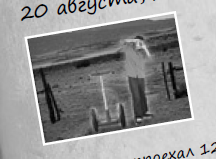
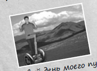

Дневник моих поездок на моем
собственном скутере по тер-
ритории США!

Я видел парочку знаков в стиле Burma
Shave на обочине дороги:
Если вы не заметите
проезжающие мимо машины,
то они могут сбить вас.
Одно мгновение -
и бесконечность...
Я определенно не хо-
тел, чтобы на меня наехала машина.

Первый день моего путешествия!
Я не верю, что наконец смог отло-
жить все дела в сторону и отпра-
виться в путешествие. Поскольку
я собирался ехать на скутере, то
не мог взять с собой много вещей:
Только все самое необх-
ходимое.
Как сказал бы Лао Цзы:
Путешествие в тысячу миль начи-
.
нается с одного шага к скутеру
Добавим символы:
<html>;
&
©
Теперь тоже самое, но с использованием номеров кодов:
<html>;
&
©
Ответ на задание:
Ðετröìτ
Использование тега <code>
Пример использования тега <code>.
Это очень важный текст.
Использование тега <pre>
function greet() {
console.log("Привет, мир!");
}